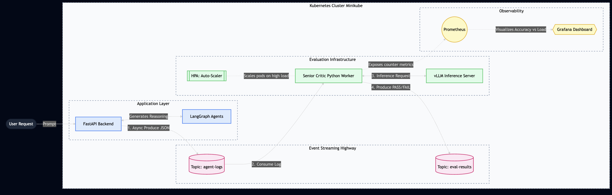
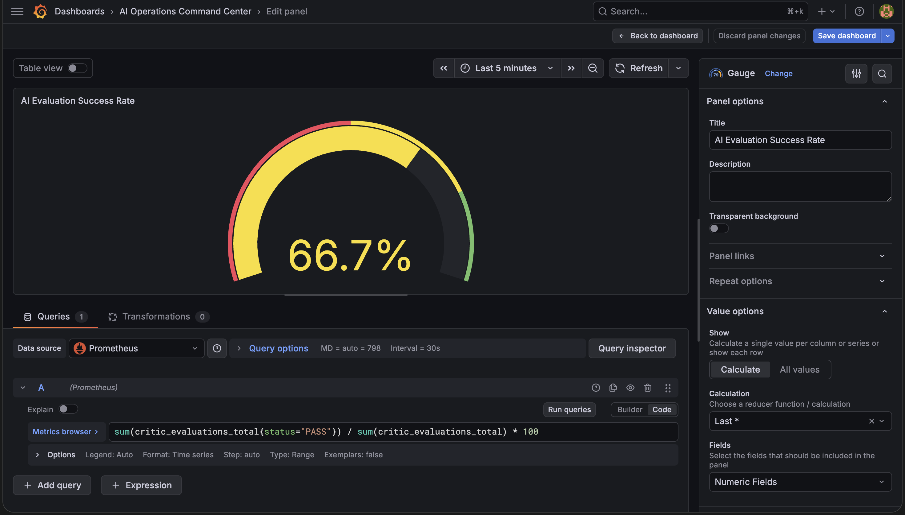

Aegis: Event-Driven Agent Evaluation
Architecting an asynchronous MLOps pipeline on Kubernetes to audit streaming LangGraph agents without impacting user-facing latency.
The Engineering Problem
In production, reasoning agents (like those built with LangGraph) often "drift" or hallucinate logic under high concurrent load. However, evaluating these agents synchronously—running an LLM-as-a-Judge API call immediately after the user's request—doubles inference latency and ruins the user experience.
The solution? Aegis. I architected an asynchronous, event-driven evaluation platform deployed on a bare-metal Kubernetes cluster. It acts as a "Senior Critic," silently grading agent logs in the background without blocking the main application thread.

The Aegis Architecture: Decoupling the user-facing API from the heavy vLLM evaluator using a Redpanda Kafka message broker.
The Data Highway: Redpanda Kafka on K8s
Instead of the primary FastAPI application directly calling the evaluation model, it acts as a Kafka Producer. It packages the LangGraph reasoning trace into a JSON payload and pushes it to an agent-logs Kafka topic.
To keep the Kubernetes footprint lightweight, I deployed Redpanda—a C++ based Kafka-compatible broker—which eliminates the heavy JVM/Zookeeper dependencies of traditional Kafka setups.
The "Senior Critic" Agent & vLLM
Listening to this Kafka topic is a specialized Python worker pod (the "Senior Critic"). It continuously polls the topic. When a new agent log arrives, it formats the reasoning trace and sends it to a highly optimized inference server.
To maximize GPU utilization and throughput, the inference layer relies on vLLM (using PagedAttention for efficient KV-cache management). The Critic agent grades the logic, assigns a Faithfulness/Correctness score, and securely pushes the result to an eval-results Kafka topic via a delivery callback.
# From: critic.py - The Evaluation Logic
# We use the LLM's ACTUAL answer to set our status
if "PASS" in llm_grade.upper():
score, status = 10.0, "PASS"
EVALUATIONS_TOTAL.labels(status='PASS').inc() # Prometheus Tracking
else:
score, status = 2.0, "FAIL"
EVALUATIONS_TOTAL.labels(status='FAIL').inc()
# Publish the grade safely back to the data highway
producer.produce(
'eval-results',
key=str(log_data.get("agent_id", "unknown")),
value=json.dumps(eval_result),
callback=delivery_report
)
producer.poll(0) # Force delivery confirmationScaling with HPA
If user traffic spikes, the Kafka queue will start to back up. To solve this, I configured a Horizontal Pod Autoscaler (HPA). If the vLLM server or Critic pod hits 80% utilization, Kubernetes automatically spins up additional replicas of the Senior Critic agent to drain the Kafka queue faster, ensuring evaluating latency never degrades.
Full-Stack Observability
A production system is useless if you can't monitor it. I natively instrumented the Python agent with the prometheus_client to expose custom metrics on port 8000.
I wrote custom Kubernetes ServiceMonitor manifests to allow Prometheus to scrape these metrics every 15 seconds. This data flows into a custom Grafana dashboard, correlating hardware metrics (like GPU memory) against reasoning accuracy (PASS/FAIL rates). This allows engineering teams to detect load-induced logic degradation in real-time.

Real-time observability: Tracking live Faithfulness metrics scraped by Prometheus via Kubernetes ServiceMonitors.